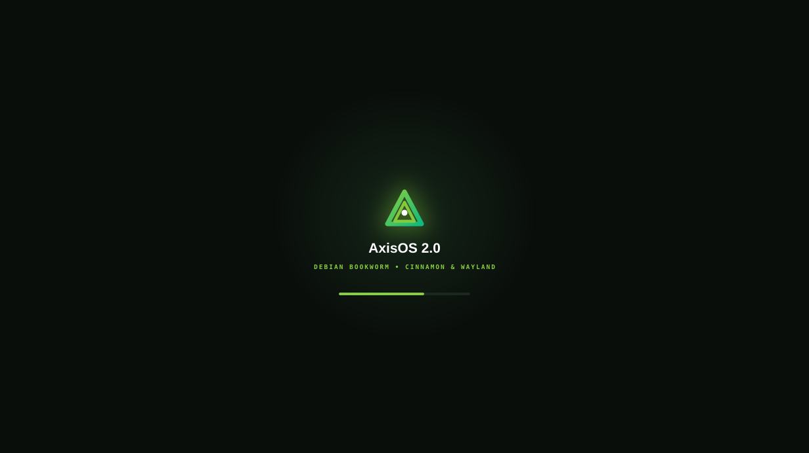
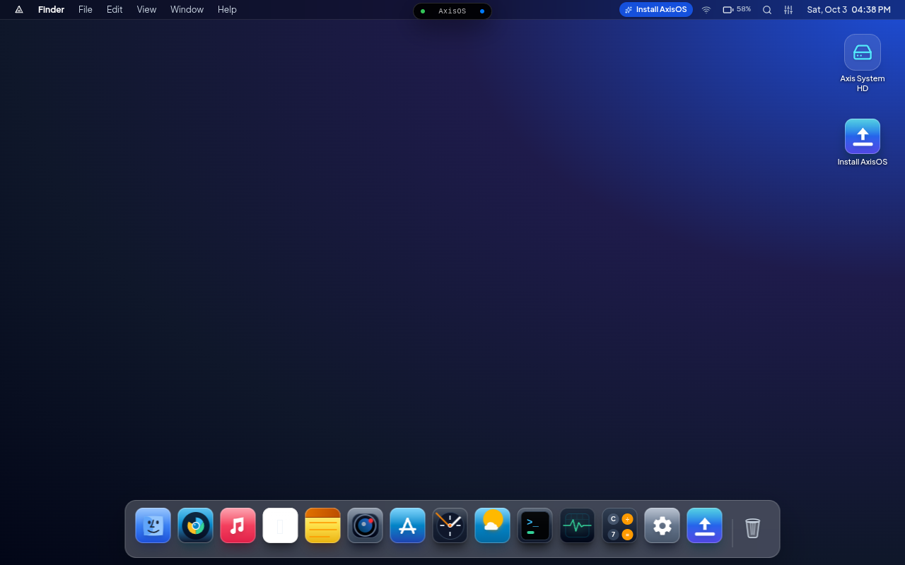
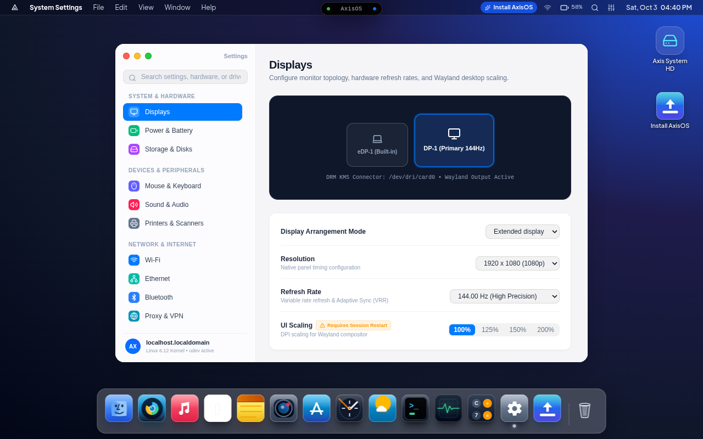
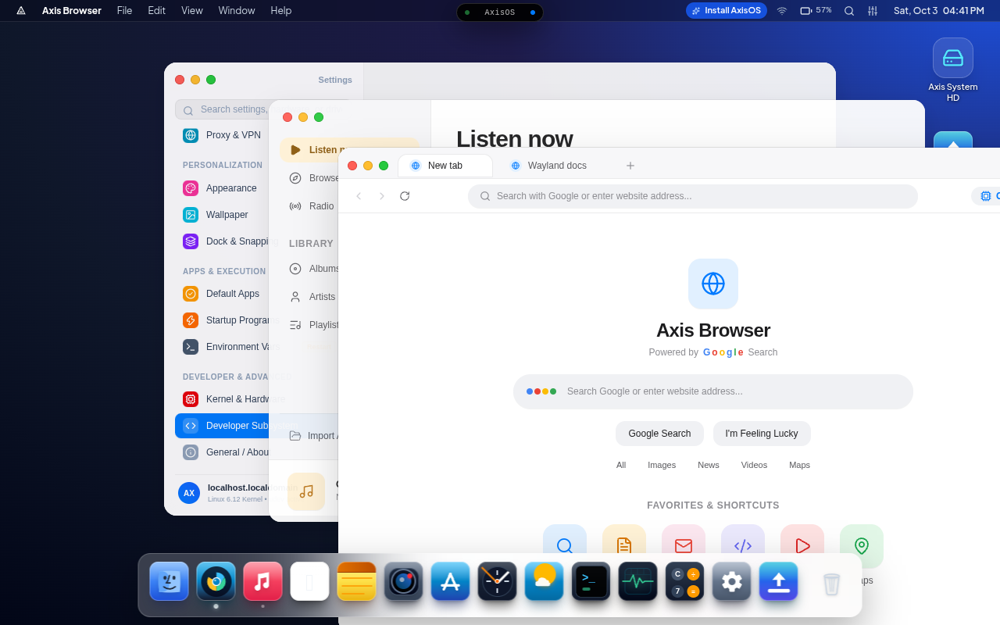

Desktop shell
A custom desktop environment with window management, dock, top bar, and control center.
PROJECT FILE / 001
A Debian-based Linux operating system bringing together the Linux kernel, Cage Wayland compositor, and a custom desktop shell.
SYSTEM PROFILE
AXISOS / VISUAL PREVIEW




INSIDE AXISOS
A custom desktop environment with window management, dock, top bar, and control center.
Built-in experiences for browsing, files, terminal, system settings, and software management.
Boot the live environment to explore AxisOS, or follow the project installation guide.